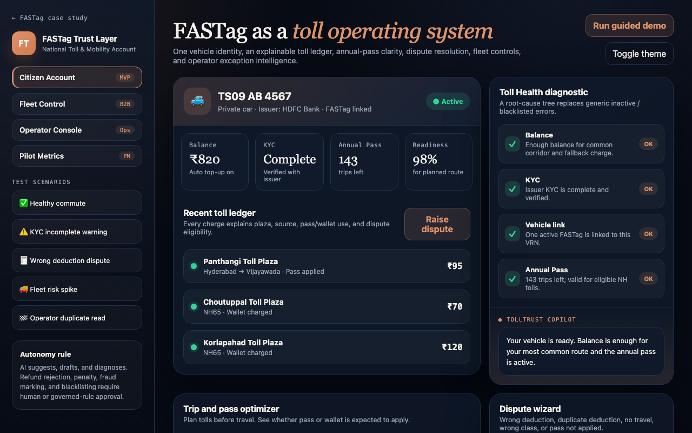

The work
Platforms, products, and proof.
One flagship, two supporting case studies, and a bench of working apps — every claim backed by something you can open.
FlagshipAIFintech
AI Collections Cloud
An AI-native recovery platform for lenders — a collector copilot, recovery prediction, and next-best-action over a clean domain, data, and event architecture. Human approval on every high-risk action.
Read the case study →

GovTech · Mobility
FASTag Redesign
A national toll & mobility trust layer — explainable deductions, disputes, annual-pass intelligence, fleet controls.
Case study + prototype →
Lending · Platform
Loan Origination System
A guided, state-based origination platform — application to approval with fewer handoffs, on workflow state machines.
Read the case study →
Strategy · AI
Synthesis Engine
An offline decision-brief engine — raw inputs to strategic frameworks, implications, and a 30-60-90 plan.
Open the product →